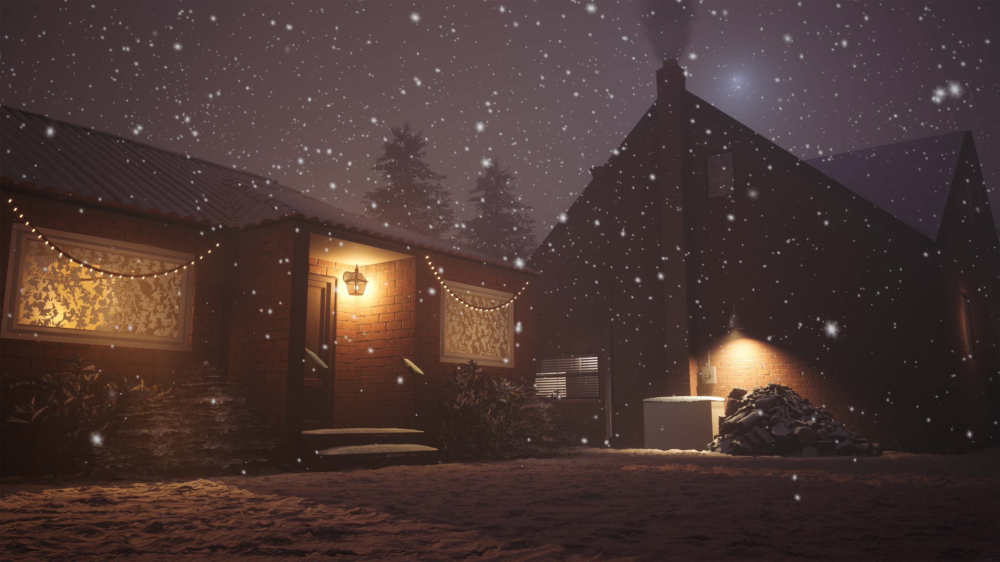
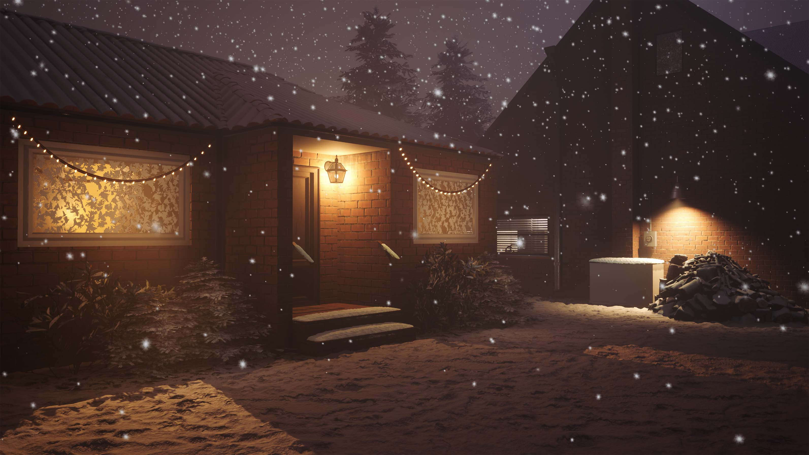
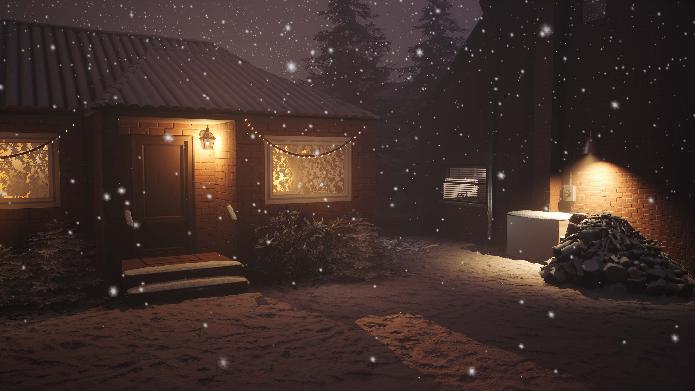
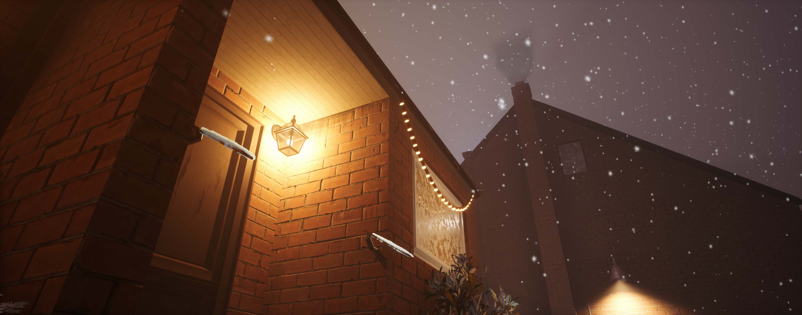
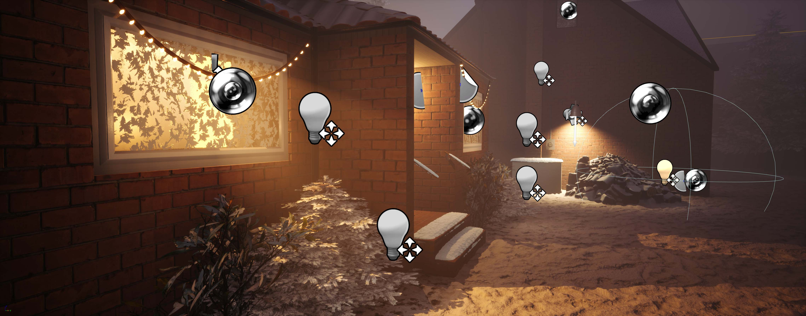
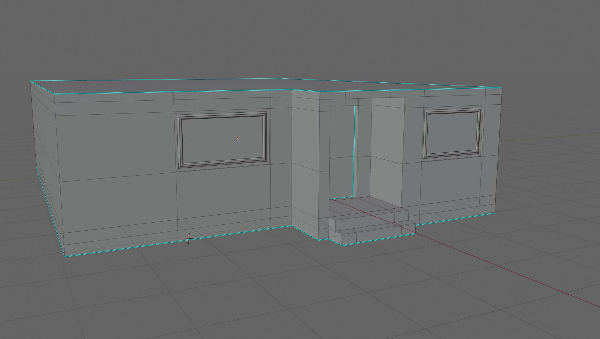
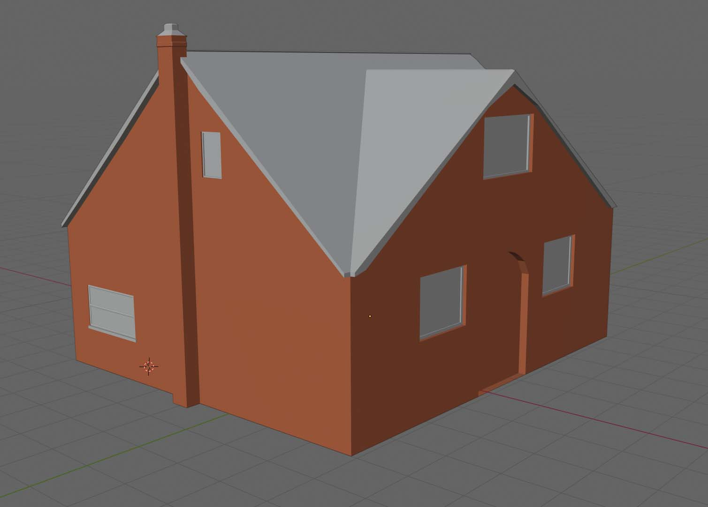
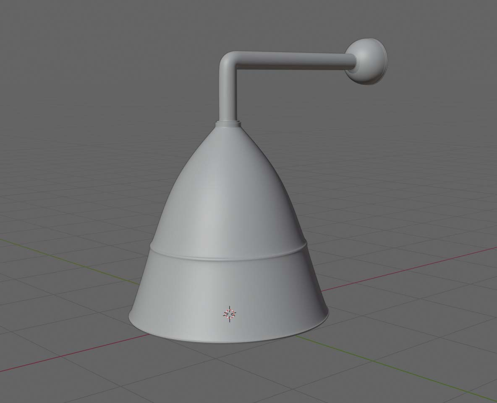

Winter Suburbia
I wanted to expand my knowledge of 3D asset and environment production, so I took on a new project inspired by an image by Stefan Koidl. I knew I wouldn’t be able to create the entire scene myself in any timely fashion, so I focused on just creating the homes, and a few other small items. I relied on marketplace assets I had picked up over time to fill in the rest of the scene. As it is nearing Christmas, I also wanted to make the scene a little festive, and give off a sense of cosiness.
I made the decision to light the scene almost entirely dynamic (the exception is the spot light emulating the moon- which is stationary), as I wanted to limit my learning scope to just 3D modelling and UV texturing without thinking about lightmaps- it also allowed me to gain experience in dynamic lighting. I used a lot of fill lights to emulate how the light would bounce off the snow.
Overall I am pretty happy with how this turned out, and I learnt a lot regarding 3D asset creation and lighting.
I have listed asset sources on ArtStation.







